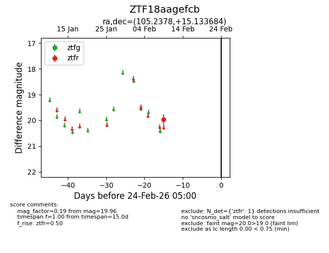
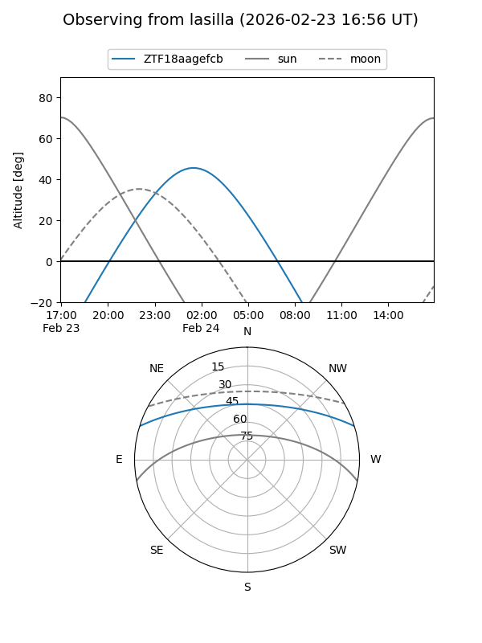
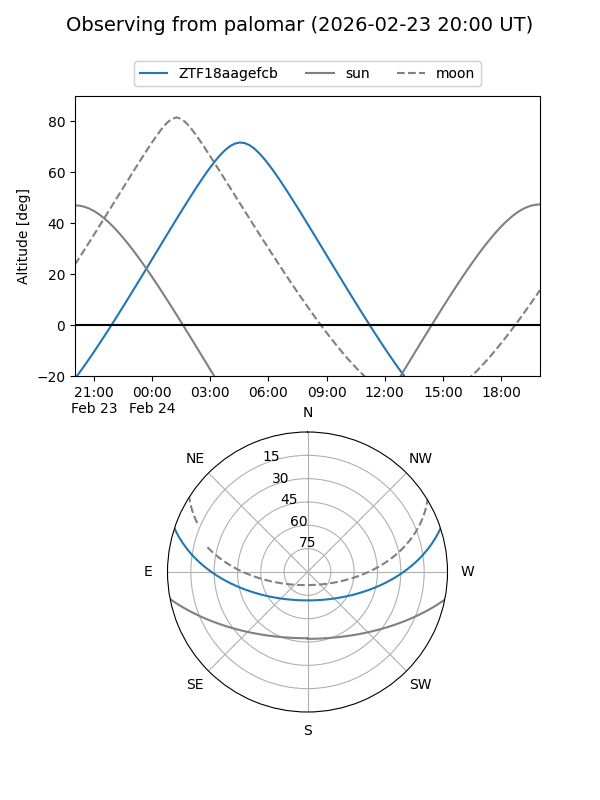

ZTF18aagefcb
Target ZTF18aagefcb at 2026-02-24 09:08
Aliases and brokers:
FINK: link
Lasair: link
ALeRCE: link
alt names
ZTF18aagefcb (ztf,fink_ztf)
Coordinates:
equatorial (ra, dec) = 105.2378,+15.13368
equatorial (HMS+DMS) = 07:00:57.07,+15:08:01.26
galactic (l, b) = (200.4170,+8.89917)
Flags:
Photometry:
last ztfr=19.96
1 ztfr detections
Lightcurve

Visibility


Additional plots